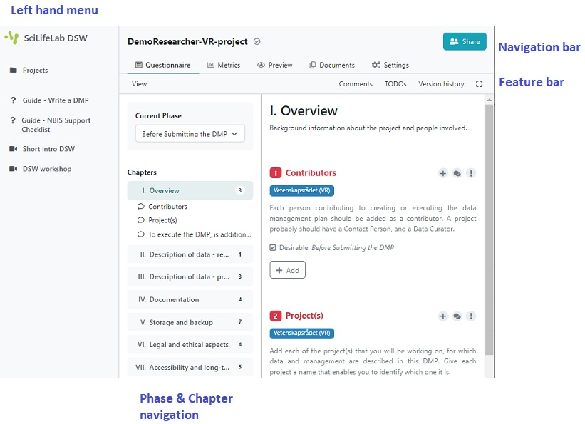
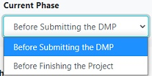
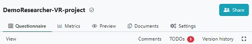

When answering questions
The DSW tool has some functionality that can be good to know about, to be used before and while answering questions.
Tool orientation
- The menu on the left-hand margin is the top level menu of the tool, with how-to-use links and where you can find all your projects
- In the top of the page, there is a navigation bar with tabs that allows you to
shift between different views of the current project.
Questionnaireis where you answer the questionsMetricsshow statistics of questions answeredPreviewdisplay the output document (not implemented)Documentsis where you create and download output documentSettingsis where you select format for the output document
- Directly under the navigation bar is a feature bar with:
Viewshow or hide tags, phases, and/or authors under questionsTODOsshow questions in need for actionsVersion historybrowse historyZen modeshow or hide left menu and navigation bar- Next to the left-hand menu, there is a Phase & Chapters overview, where you can change phase and see how many questions that needs to be answered. By clicking on one of the chapters you will reach that part of the DMP.

About phases and answering questions
The DSW provides a filtering feature that allows you to see questions relevant only to a particular phase of a research project.- The most active phase, with the most questions to answer, is
Before Submitting the DMP - The answers will be saved automatically.
- Under most of the questions you will find guidance or advice on how to answer or what to consider.
- For some questions you may provide more than one answer. If you want to add a new
answer click the
Addbutton at the end of your last answer. Note: When doing so, you might need to scroll up in order to get to the first field to be filled. - Your DMP is ready to be filled. Answer the questions in red (these are the questions that should be answered during the selected phase, questions which belong to other phases are in black).

Notice that once a question has been answered, it becomes green. When all questions in a chapter has been answered, this chapter becomes ticked in the Chapters overview, instead of showing the number of questions that should be answered.
Add a TODO
The tool has a TODO function, which lets you mark questions where an action is necessary.Example
- Click on
I. Overviewin the Chapters overview menu and look at the question1 Contributors - Hover on the
+sign next to this question, and then click on the appearing+ Add TODO. - Notice that you now have 1 TODOs in the feature bar in the top of the page. If you click on it you will see a list to the right, with the question(s) which need an action. The list is linked, so clicking on one of the items in the list will lead you directly to it. Note: To remove the list view, click on TODOs in the bar again.
- To remove a TODO, just click on the yellow
TODO Xto the right of the question.
